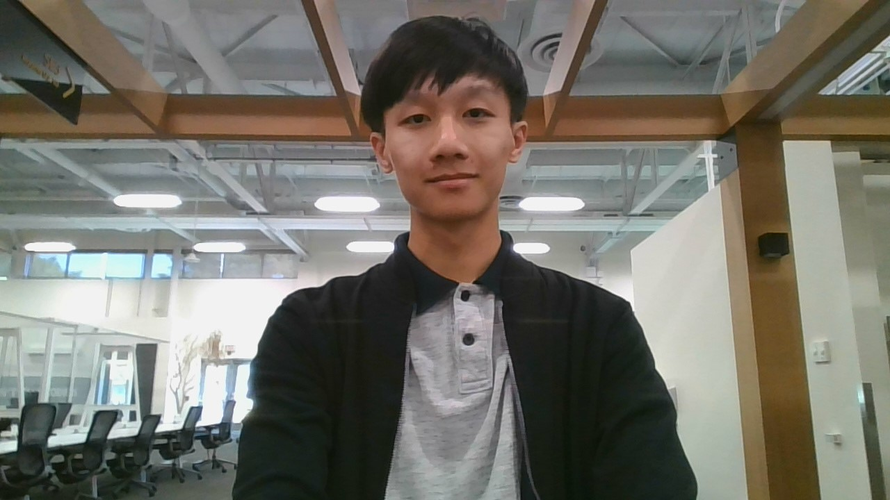
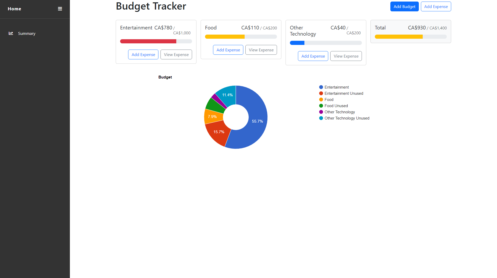
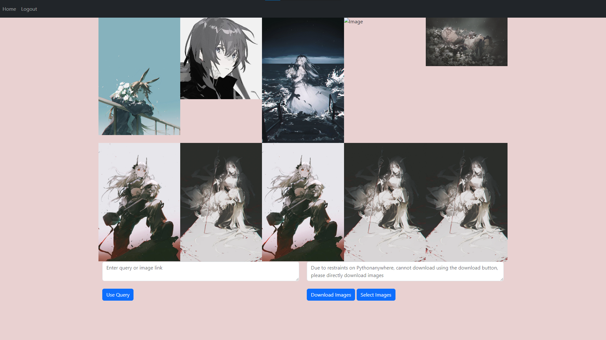
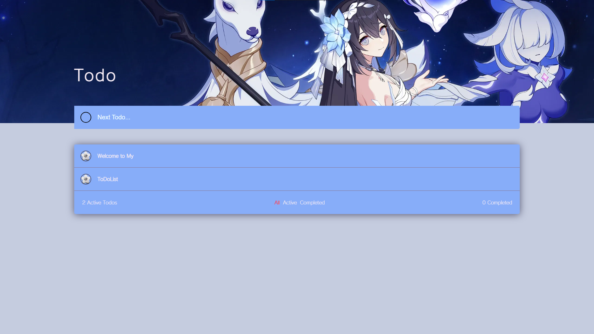
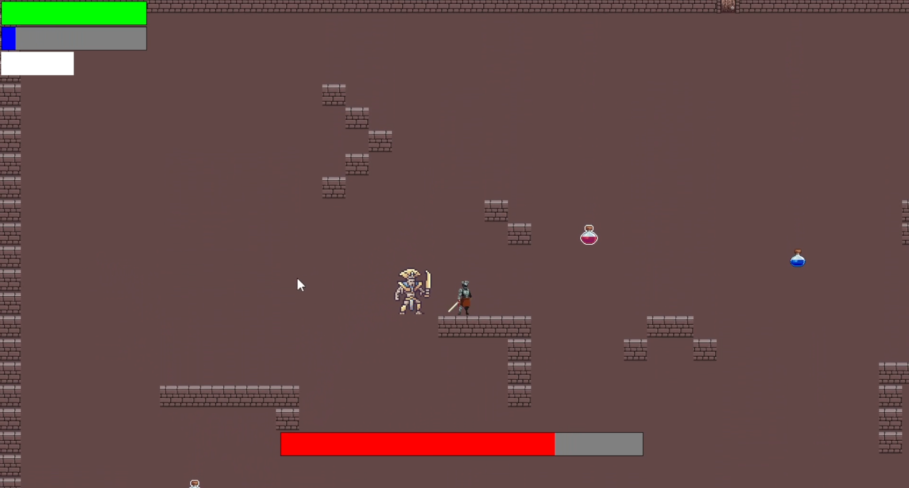
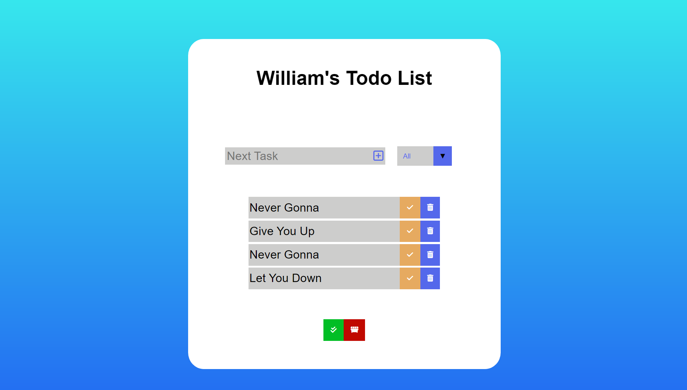
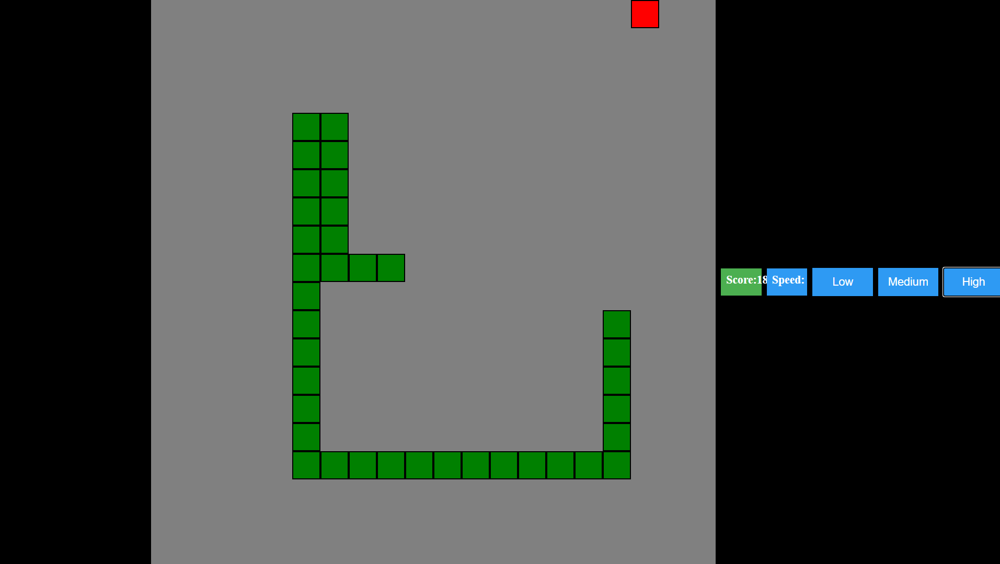
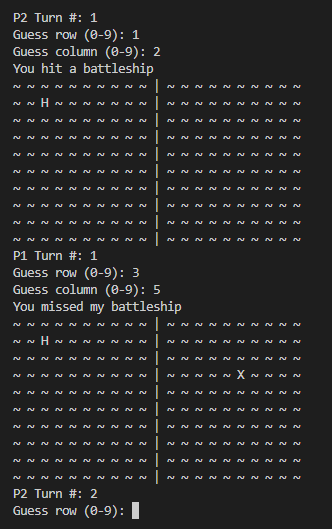
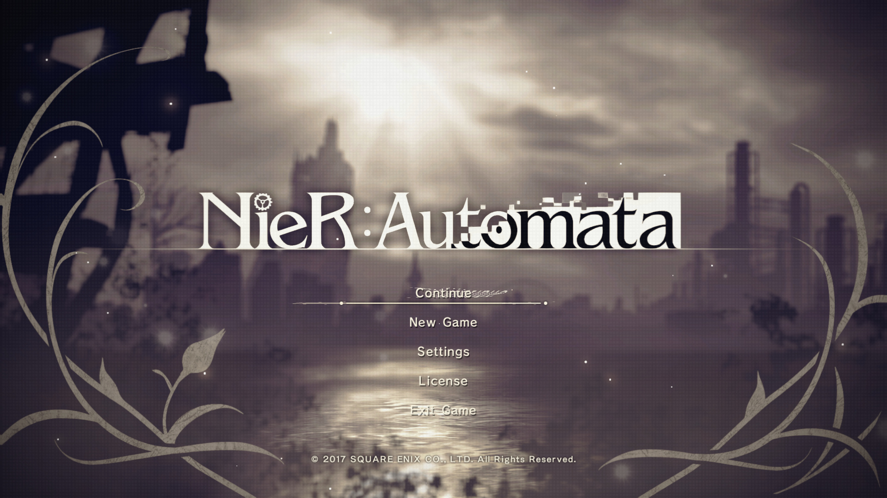
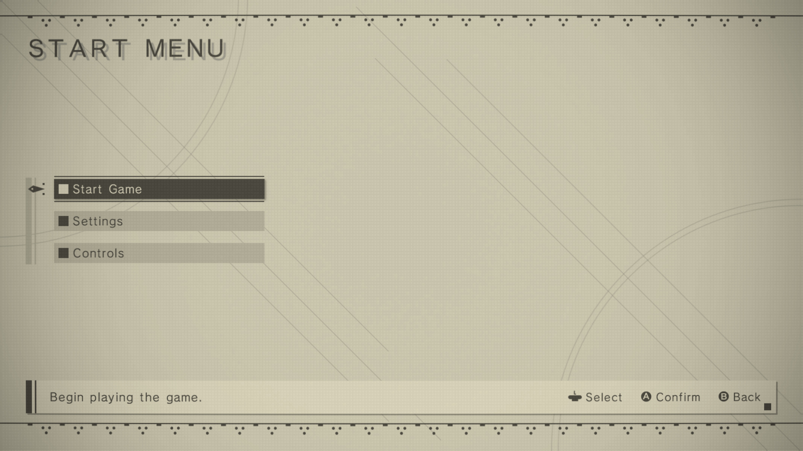

Hello! I'm William Li, a Computer Engineering Student studying at the University of Waterloo.
I've been interested in software for several years, especially in AI and Machine Learning.
I'm currently on a Winter Co-op working as a Network Engineering Intern for Rogers Communications.
I'm an avid fan of gaming, music, and anime/manga.
During my most recent coop, I worked at Health and Rehab Research Inc as a Machine learning Engineer.
During this internship, I mainly worked together with two other team members and later on, another two, to create a Python app that would help with diagnosing patients with Chronic Lower Back Pain.
This app mainly utilized OpenCV and Mediapipe to take in video feed, for example, from the users' webcam or from a recorded video, and would track 33 key landmarks of the individual being recorded, alongside
another 4 additional landmarks which we were predicting using singular value thresholding algorithms. In addition to tracking the landmarks, we would also track the users face to predict the
emotion they were displaying which we would later use in a neural network to predict what emotion the individual would experience when doing certain motions and exercises.
During my second coop, I worked at Rogers Communications as a Network Engineer.
During this internship, I led a project to automate monthly processing of key-performance indicators and turning them into PowerPoints which would then be exported to their respective teams
I also worked on a PHP web application which would do much of the same functionality, with creating and automating a form for users to input data that would then get processed and store it.
During my first coop, I took part in the Waterloo Experience Accelerate Program where I was part of the Microsoft branch.
Under the mentorship of an RBC member, I and four other team members planned a financial advisory service utilizing MS Azure services with a focus on AI.
The project consisted of two main parts, one being a general financial QnA bot to answer basic questions from users
and the other being a more personalized investment planner to give users recommendations based on information they provide.
I oversaw Security and Privacy procedures such as firewalls, multi-factor authentication, and data transfer, storage, and removal.
I also oversaw various Microsoft Business Guidelines such as societal and ethical considerations like the transparency of our service.
During my last year of high school, I helped take part in Morning Math Tutorials where I and 2 others helped tutor other students seeking Math help in
individual and group sessions. In addition, I also helped tutor in our high school's Student Discord Server, particularly in Math and Physics.
During my time as a volunteer at The Chinese Academy, I monitored the grades 3 and 4 Chinese second language class during assessments and breaks,
alongside guiding them through lessons and self-study periods. In addition, I helped organize school events and activities,
such as a Lantern Festival and open house, in which I worked with others to prepare various activity stations for younger students.

Trying to manage my budget while living away from my parents and trying to take care of myself was something I wanted to get better at, with trying to
see in what ways I could try to decrease my spendings. At the same time, instead of simply grabbing one of the web, I decided it could serve as another good
learning experience and as such, I wanted to try making my own while working with something new. That something new ended up being ReactJS and so I tried
testing out a lot of different features of it. While I was initially planning on making it fairly simple, with simply adding and deleting budgets or expenses,
I thought it would be nice to include some other features, such as summaries for a month and stuff like repeat expenses with how many subscription services
are popping up now. As a result, I tried working with a low of different aspects of ReactJS, such as contexts, hooks, and components, and to also make the website
as responsive as I can, so that you can easily see any changes and updates.

As someone who has recently started getting into digital art and drawing after getting a tablet, I wanted to try making a sort of image searcher with
the main intention of being used to look for artists and their works. At this time, I also wanted to try working with APIs as I had not done much work
with them in the past and so I wanted to try utilizing a bunch of APIs to achieve my goal. In the end, I finished with a different product than
what I was initially planned but was still fairly happy with the product, creating a website that allows the user to make queries, using either
keywords or by providing a link to an image. I had planned on only trying to use particular artist platforms to webscrape through but ended up simply
using an API to go through Google. I was trying to make a sort of reverse image search feature and to provide details such as the images'
dimensions, original creator, and more.

This todo list was another learning experience for web development, mainly to try and get more experience with databases. This has been my first
time trying out firebase for both hosting and database storage. The todo list contains some basic animations, buttons to show only certain todo list items,
auto size scaling, and more.

Candlelight is my attempt at creating a Roguelike game which features the player exploring an endless, randomized dungeon.
With one of my favorite video-game genres being roguelikes, one of my biggest interests was trying to develop such a game myself.
The game involves a lot of different mechanics such as the randomizing of 10 different stages alongside enemies and items to allow
for a unique play-through every single time. The enemies themselves have different stats such as there being faster, but weaker enemies
whereas others are much slower but hit much harder. In addition, every 5 stages features 1 of 2 bosses, each with unique abilities and
a real-time updating health bar and will also drop a powerful item upon defeat. The player has many different stats such as movement speed,
physical and magic damage, and defense, all of which can be increased using the various items scattered around the stages.

This todo list was, alongside my snake recreation, mainly a learning experience for HTML, CSS, and Javascript, with more of a focus on trying
back-end features. The todo list contains some basic animations, auto size scaling, clear/check all buttons, and utilizes local storage to maintain
list items between startups.

This snake recreation was mainly a learning experience for HTML, CSS, and Javascript. The game is a fairly normal remake of the original
but with a few additions such as speed functions that work in real time to change the speed of the snake, player score, and various other controls.

Similarly to the todo list and snake, this battleship recreation was my first coding project and mainly a learning experience for python. The game is a fairly basic remake
of the original utilizing the terminal and contains features such as a single player mode where you play against an enemy bot using a custom randomizer for enemy ship placement and
to attack the player's ships alongside featuring a local two player game-mode. You can also customize the number of ships, turns, and board-sizes.

Gaming has always been one of my biggest hobbies and passions for as long as I can remember and is one of the main reasons as to how I got interested in wanting to persue software.
Growing up, Minecraft was undoubtedly my favorite game and my biggest entry into thinking about how circuits and programming worked in a way. I used to do a lot of redstone contraptions
and random command block ideas alongside playing with a bunch of mods and this got me interested in learning more about circuits and how mods were made. I always found it really funny whenever
we would get introduced to certain topics in classes and I would realize that I've heard a lot of these terms like gates and latches before in redstone tutorials.
My favorite genres are Role-Playing Games and Roguelikes of which, one large aspect of these sorts of games is generally learning about enemies and their various AI/patterns which
has always been one of my favorite parts about these types of games and what sparked my interest in AI. Overall, this hobby in gaming is what inspired my interest in AI, machine learning, and
programming in general and as a result, the main reason why I wanted to pursue the computer engineering program at the University of Waterloo as I thought it would be a good opportunity to
gain experience in such things both in class and through coops.

A massive part of this website is also heavily inspired by one of my favorite games, Nier Automata. Nier Automata's UI has always stood out to me as one of the most interesting and unique designs
I've seen in gaming and as such, I wanted to try my best to recreate most of it. While the welcome menu is mostly original, the main menu is based on the in-game menu where I tried to recreate most
features, including minor details that in general, I haven't seen being replicated often in other recreations of the game's UI such as the little sideways arrow over the sidebar when you hover over a tab.
However, there are also a fair number of details that I did not implement/keep such as the border on the top and bottom and keeping the grid present when you open one of the tabs.
I also wanted to try keeping everything on one screen size and webpage to eliminate the need for scrolling and for a smoother experience.

Gaming has also been a big influence on the sort of music I listen to, with a large number of music I listen to being soundtracks from games like Nier, Ori and the Blind Forest, and Devil May Cry.
Minecraft Image:
Playstation
Nier Automata Images:
GameUIDatabase Steam
Just like with gaming, anime and manga has been one of my main hobbies and interests in the past few years and has also helped influence other hobbies of mine like music. Just like in gaming, a lot of
music I listen to come from anime soundtracks such as from Made in Abyss and The Ancient Magus' Bride. Anime has always been a big part of my life growing up with shows like Naruto and Dragon Ball but
I started watching much less after starting high school. However, anime and manga still remains as one of my favourite hobbies and I still find it as something I can easily enjoy and talk about with friends.
Anime was also one of the big motivating factors in keeping me interested in music with learning various songs on piano alongside simply watching plenty of anime about music like Your Lie in April.
The Ancient Magus' Bride Image:
MyAnimeList
Music has been a hobby of mine since 2nd grade when I started taking piano and music theory lessons. I played piano until the end of 9th grade after I had passed my level 8 piano and music theory exams and since then,
have thought about getting back into it but have not had much of a chance. Piano was a really fun way for me to connect to some of my other hobbies as there were a lot of times when I haved tried learning various songs
from games and anime. Recently, I've been getting very into trance music through the game Punishing Gray Raven and a lot of cultural music through Genshin Impact.